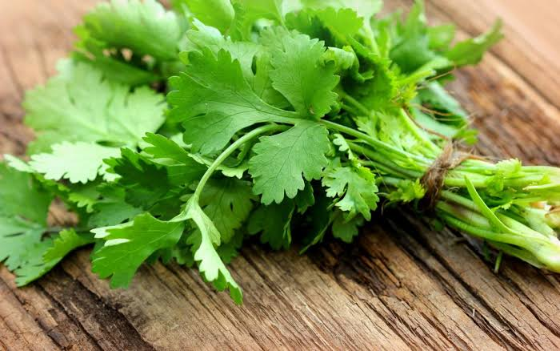

My all time favorite food is Steak Tacos. You can never go wrong with them!
Whether it's street tacos or tacos from my favorite restaurant Superica, they always hit.
If you have any recommendations for good steak tacos in Spokane, Washington email me at the email address listed below!.
White onions to steak tacos always add the perfect crunch and flavor! I always love white onion diced on top of my tacos.

Cilantro always adds a bit of freshness back into these steak tacos! I love cilantro so much thank god I don't have the soap cilantro gene...Rice and refried beans always completes this dish. Add some of the rice and beans to your taco for the perfect bite!